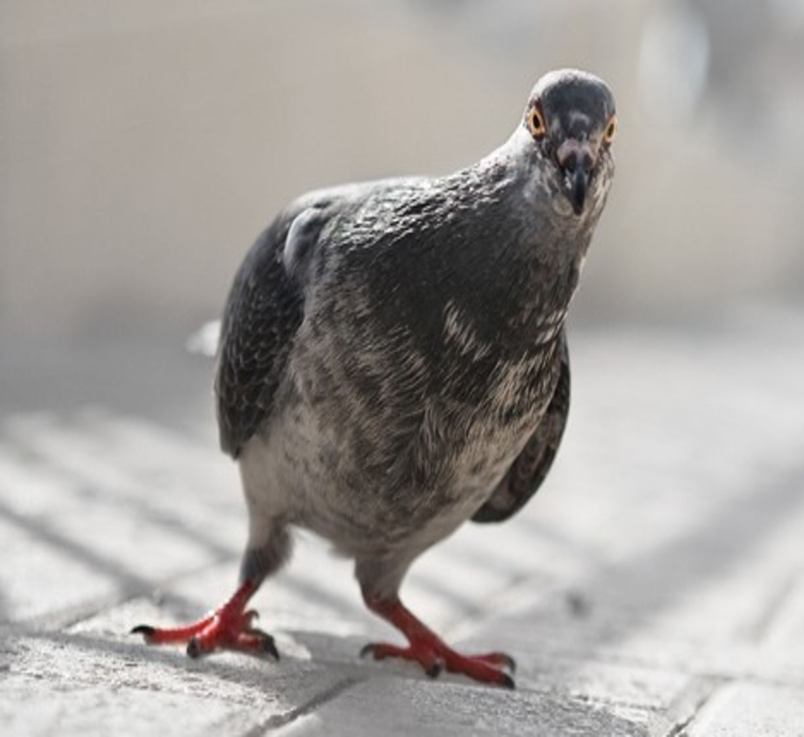

Our research
Transposition: Learning Relationships
Imagine teaching a pigeon to choose the larger of two circles. After some training, you present two new circles, both larger than the ones it has seen before. What will the pigeon choose?
If it has learned the size of the previously rewarded circle, it might choose the smaller of the two new circles because that one is closer in size to the previously rewarded stimulus. But if it has learned the relationship larger than, it should choose the larger circle, even though the smaller circle is more similar in size to the previously rewarded one.

This phenomenon is called transposition: responding to a relationship between stimuli rather than simply to their individual physical properties. Studying it helps us investigate what animals learn about their environment. Do they remember specific stimulus properties, such as size or brightness? Do they learn relationships between stimuli? Or can both types of information influence their choices?
These questions are important because relationships allow organisms to respond flexibly to new situations. Recognizing that one object is larger, brighter, or otherwise different from another can be useful even when the objects themselves are unfamiliar.
What we investigate
Our Research
At CoPAL, we are particularly interested in the conditions under which animals respond to relative versus absolute stimulus properties, and what their choices reveal about the processes underlying relational learning.
Imagine we gave our pigeons two pairs of circles instead of just one. Would they learn the larger than relationship more readily because they encounter it in two different pairs?
Now imagine that the circles used during training are medium-sized, but the new pair consists of very large circles. Would pigeons be less likely to select the larger circle because the new stimuli look nothing like those they've seen during training?
These experiments help us understand how animals balance information about individual stimuli with information about the relationships between them, and how that balance changes with experience.
Further reading
Selected Publications
- Lazareva, O. F., Young, M. E., & Wasserman, E. A. (2014). A three-component model of relational responding in the transposition paradigm. Journal of Experimental Psychology: Animal Behavior Processes, 40, 63–80. https://doi.org/10.1037/xan0000004
- Lazareva, O. F., Miner, M., Wasserman, E. A., & Young, M. E. (2008). Multiple-pair training enhances transposition in pigeons. Learning and Behavior, 36(3), 174–187. https://doi.org/10.3758/LB.36.3.174